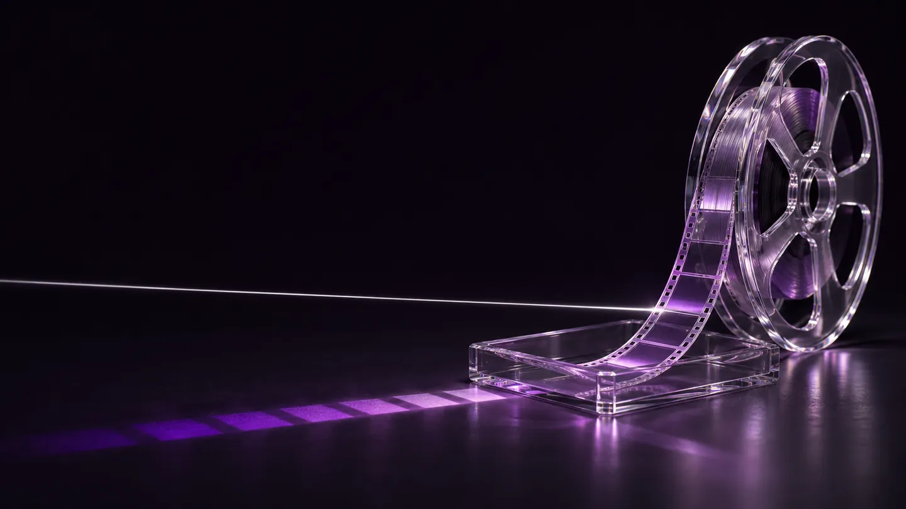

Masaüstü uygulaması
Dört sekmeli masaüstü uygulaması: video ve ses indirir, dosya biçimi dönüştürür, yarım kalmış kayıtları onarır, mikrofon sesini öne çıkarır.
Çift tıklanan bir EXE olarak paketlenebilen, dört sekmeli bir masaüstü uygulaması. İndirmede kalite seçimi, oynatma listesi, altyazı gömme, aralık kırpma, toplu iş kuyruğu ve Windows Görev Zamanlayıcı ile otomatik kanal izleme var. Dönüştürmede video, ses, resim, belge ve e-kitap biçimleri arasında çevrim ve hedef boyuta sıkıştırma yapılıyor. ffmpeg, imageio-ffmpeg paketiyle birlikte geliyor.
Özellikler
Video İndir: Twitter (X), YouTube, Instagram, TikTok, Facebook, Reddit, Vimeo ve 1000'den fazla siteden video ya da ses indirir (MP4 ya da MP3). Kalite seçimi (en iyi, 4K, 1440p, 1080p, 720p, 480p, en küçük dosya), oynatma listesi, Türkçe ve İngilizce altyazı gömme, yalnız belirli aralığı alma ve toplu iş kuyruğu var.
Format Dönüştür: Video, ses, resim, Word, PowerPoint, Excel, PDF, TXT, CSV, JSON, HTML, Markdown ve e-kitap (epub) dosyalarını başka biçimlere çevirir. WhatsApp, Instagram kare, Reels/TikTok/Shorts, e-posta eki gibi hazır ön ayarlar ve iki geçişli hedef boyuta sıkıştırma var. Word, PowerPoint ve Excel'den PDF için bilgisayarda ilgili programın kurulu olması gerekir.
Video Onar: Yarım kalmış ya da bozulmuş kayıtları (OBS sırasında elektrik kesilmesi, çökme, kablo çıkması) onarır. Önce analiz raporu yazar, sonra hızlı onarımdan ham akıştan kurtarmaya kadar yöntemleri sırayla dener. Orijinal dosyaya dokunmaz. İçindekiler tablosu (moov) hiç yazılmamış dosyalarda aynı OBS ayarlarıyla çekilmiş sağlam bir referans kayıt gerekir; yalnız görüntü kurtarılır, ses geri gelmez.
Ses Dengele: Oyun, müzik ya da karşı tarafın sesi mikrofonu bastırıyorsa mikrofondan konuşanın sesini öne çıkarır. Her ses izini ölçüp mikrofon izini tahmin eder, 15 saniyelik önce/sonra örneği dinletir. Görüntü yeniden kodlanmaz, yalnız ses işlenir.
Adobe uyumu: İşaretliyken (varsayılan) görüntüde H.264 tercih edilir, ses AAC'ye çevrilir; böylece indirilen MP4'ler Premiere ve After Effects'te sesli açılır.
Olgular
- Sürüm 1.4.0; dört sekmeli masaüstü uygulaması
- Mikrofon ayrı ses izindeyse, testte konuşma ile arka plan farkı 2 dB'den 25 dB'ye çıktı
- Her şey tek ize karışık kaydedildiyse sesleri tam ayırmak mümkün değil; ölçülen kazanç yaklaşık 4 dB
- Hedef boyuta sıkıştırma örneği: 54 MB'lık 1 dakikalık video 15 MB oldu (hedef 16 MB)
- Otomatik izleme yalnızca Windows'ta çalışır
- Yalnızca herkese açık içerikler indirilebilir; özel ya da giriş gerektiren gönderiler indirilemez
Sadece kendine ait veya izin verilen içerikleri indir; telif ve kullanım koşullarına uy.
- Tür
- Masaüstü uygulaması
- Durum
- Sürüm 1.4.0
- Teknoloji
- Python (yt-dlp, ffmpeg); EXE olarak paketlenebilir; otomatik izleme için Windows Görev Zamanlayıcı